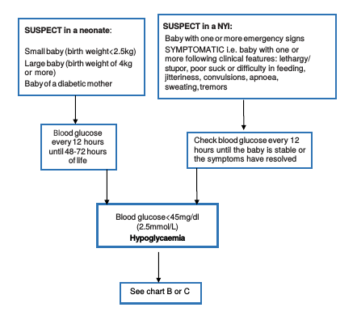
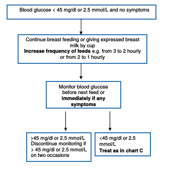
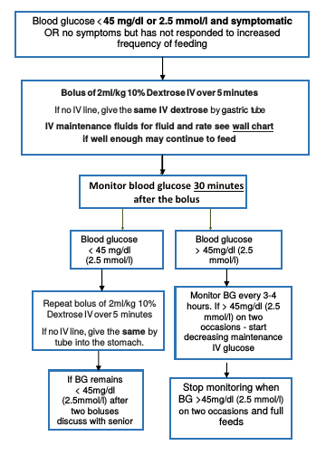

Hypoglycaemia is common in LBW and very sick NYI and should always be considered early in the management. 20% of infants < 7 days have hypoglycaemia. And there is an increased association with mortality, convulsions and permanent brain injury.
COIN defines hypoglycaemia as < 45mg per dl (2.5 mmol/L) for NYI.


How to make up a 10% dextrose solution when you only have 50% dextrose
| Water for Injection or Ringers Lactate or Normal Saline | 50% Dextrose | |
|---|---|---|
| 4 parts | 1 part | |
| 5 ml syringe | 4mls | 1ml |
| 10 ml syringe | 8mls | 2ml |
| 20 ml syringe | 16mls | 4mls |
| 50 ml syringe | 40mls | 10mls |
| 100 ml burette | 80mls | 20mls |
| 200 ml bag | 160mls | <40mls |
To make up a bag of fluids - empty fluid out of a litre bag of fluids until there is only 200mls left (4 parts) and then add 50mls of 50% dextrose (1 part) to make up 250mls of a 10% dextrose solution.
| Water for Injection or Ringers Lactate or Normal Saline | 50% Dextrose | |
| 250mls in a litre bag | 200mls | 50mls |